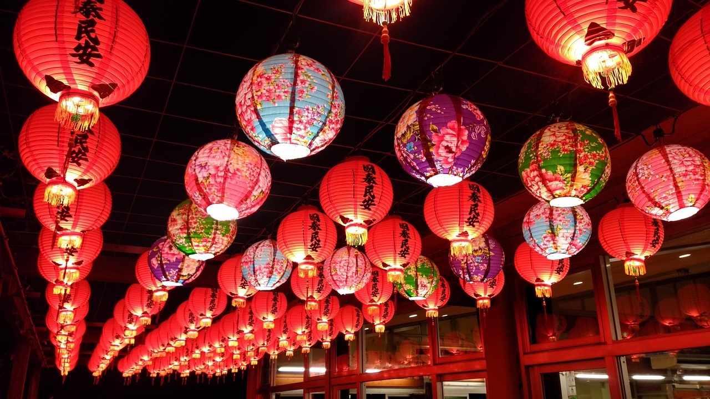

삿포로 눈 축제는 일본 홋카이도 삿포로시에서 매년 2월에 열리는 겨울 축제로, 거대한 눈과 얼음 조각 전시와 다양한 눈놀이 체험이 펼쳐지는 세계적인 축제입니다.

치치부 요마츠리는 일본 사이타마현 치치부시에서 매년 12월 2일과 3일에 열리는 밤 축제입니다. ‘치치부 신사’에서 주관하며, 일본의 3대 히키야마(끌차) 축제 중 하나로 꼽힐 정도로 유명합니다.